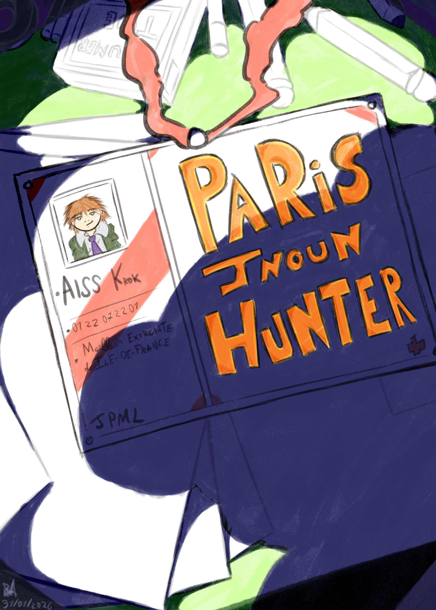

Krok Aiss a un bureau d’exorcisme sur Paris. Il veut percer pour devenir riche et célèbre et serrer plein de biatchs mais il a 0 buzz.
Un jour une mamie va lui demander d’aider son petit fils qui a été maudit par un camarade de classe.
Après enquête, Krok découvre que le camarade de classe en question a déjà attaqué de la même façon d’autres enfants qui avaient essayé de près ou de loin de l’empêcher d’harceler un élève de l’école.
Krok confronte le harceleur et lui subtilise l’artefact qui lui permettait de maudire les autres enfants. Dans le même temps, il découvre que cet artefact était un objet appartenant jadis à un enfant mort dans la rue dont l’esprit était resté attaché à cet artefact.
Le fantôme de l’enfant mort remercie Krok d’avoir récupéré son objet qui ne servait plus qu’à blesser les autres et Krok est content d’avoir réussi une affaire.